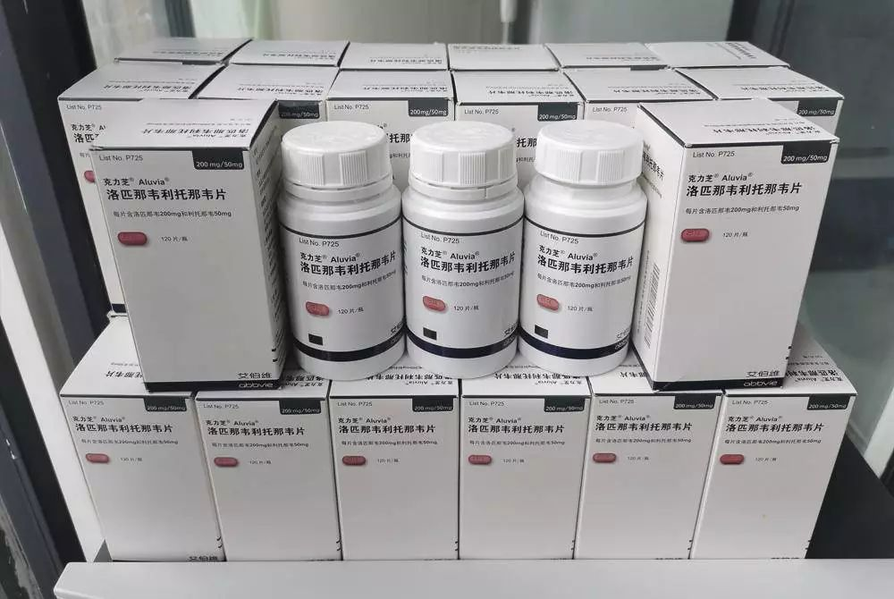
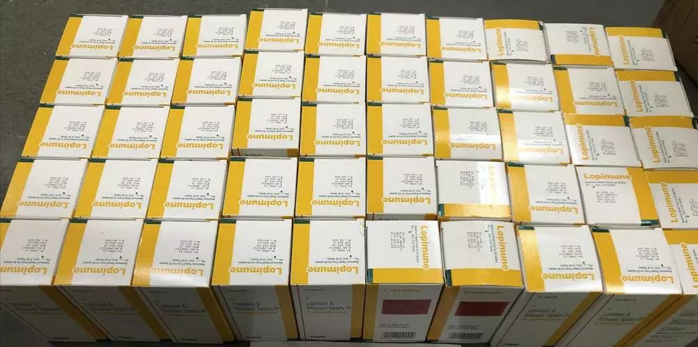
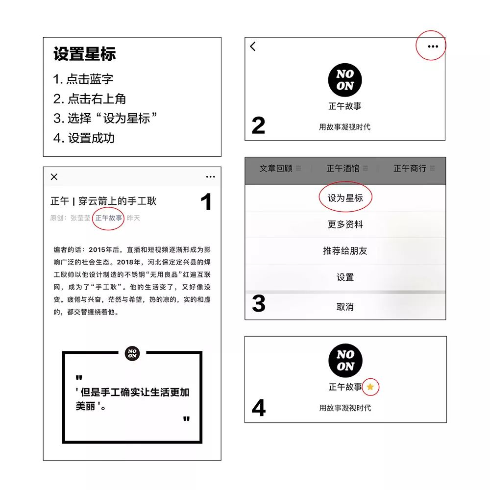

在人间丨《我不是药神》抗疫版
原文链接 备份链接 凤凰新闻客户端 凤凰网在人间工作室出品 1月28日下午两点，一位在武汉隔离病房的母亲刚刚吸出一些母乳。她有两个孩子，小的还在哺乳期。这是向松鼠哥求助的200多名新冠肺炎感染者之一。 松鼠哥是一名HIV感染者。1月28 …
编者按：1月28日，HIV感染者“HIV松鼠哥”发微博称，可以向确诊的新冠病毒肺炎患者免费提供“克力芝”——一种被列入《新型冠状病毒感染的肺炎诊疗方案》的抗HIV药物，药品则主要来自国内HIV感染者的捐赠。从那天起，他的手机就没消停过。
以下是他的口述：

送药给新冠病人的HIV感染者
口述 | HIV松鼠哥（化名）
采访、文 | 杨溪
1
我是一名HIV感染者，最近这两年一直在做一个面向HIV感染者的药品集散平台。很多感染者会把闲置的药物寄到我这儿，我再免费提供给其他有需要的感染者。比如当他们没有时间去当地疾控中心拿药，或者出差忘记带药，就会来找我，我寄一些药给他们救急。整个过程是无偿的，就是一个民间互助的行为。
新冠病毒肺炎疫情爆发以后，我意识到，由于出行受限，可能有一部分感染者无法及时去医院拿药，一旦断药，他们将面临病毒载量反弹，甚至病毒突变为耐药病毒的风险。所以我就动员了身边的一些感染者朋友——我知道谁手里可能会有多余的药——他们又分头去动员了一些人，大家很快就行动起来了。
可能由于HIV感染者的身份，我们的危机意识比普通人要强一些。再后面我们就开始商讨，是否有能力去帮助更多的人。
当时已经有消息说，HIV感染者不是新冠病毒易感人群，所以我们吃的很多种药物可能都对新冠病毒有效。比较明确的消息是，国家卫建委专家王广发在治疗期间服用了一种抗HIV药物“洛匹那韦利托那韦片”（俗称“克力芝”），证明有效。我也通过一些朋友，了解到上海很多医院都在用这种药，对于轻症患者来说，效果还是不错的。
克力芝是处方药，在一般药房买不到，必须是正在服用这种药物的HIV感染者，到定点医院或疾控中心才能开到。它被列入新型冠状病毒感染的肺炎诊疗方案后，我们就锁定了克力芝，决定尽可能多地募集，并且采购一批，用于援助新冠病毒肺炎患者——他们的需求可能比HIV感染者更迫切。
我之所以这么说，是因为对于HIV感染者而言，克力芝并不是一个特别好的药物选择。它虽然属于国家免费药，抗病毒效果和耐药屏障都不错，但是副作用偏大，初期的不良反应主要是腹泻，长期服用还会出现转氨酶升高、脂肪代谢异常等问题。
而且克力芝的服药剂量也比较大，一天两次，一次两粒，相当于一天要吃1000毫克的药物。很多HIV感染者不愿意承受这个药物负担，就自费更换了其他的药，比如特威凯。特威凯一天只需要吃一次，一次吃一粒，剂量只有50毫克。药量对比悬殊。
有些HIV感染者从医院里开了3个月的克力芝，吃了一个月就换掉了，这时候他手里就一定有两盒闲置的药。我们就是动员了这样的一群人——手里有闲置克力芝的HIV感染者，让他们捐助出来。并不是说我们牺牲了自己，不吃药了，把这个药让出来了，不是这样的。
1月28日，我发微博说，可以向确诊的新冠病毒肺炎患者免费提供克力芝，药品主要来自国内HIV感染者的捐赠。这个活动进行了一两天之后，我们发现克力芝的缺口比我们预想的大，就分两次从印度采购了428盒，费用由我和几个朋友内部承担。
目前采购的药只有100盒到了国内，还有328盒由于没有处理好海关的问题，退回了印度，我们现在正在想办法。
从HIV感染者手中募集来的克力芝
HIV松鼠哥从印度采购的克力芝
2
我今年30岁，感染HIV将近有8年的时间。2012年刚确诊时，我也经历过恐慌、抗拒、自我不接纳。
大学一毕业，我决定换个城市生活，就从北京去了广州，在一家互联网公司找了份技术设计类的工作。
当时就是逃避。我相信很多人都是这样的，遇到了重大的人生变故，你就很想要换个环境，你会把人生的诸多烦恼归于外界，觉得周围的一切都不好，都让你不满意。实际上换了之后还是要解决原来的问题，这个问题是你自己的问题。
幸运的是，确诊以后，医务人员和公益组织都给了我非常多的帮助，不仅是医学上的援助，也有心理上的支持，所以我大概花了半年的时间就走出来了。但是很多HIV感染者，是没有告诉任何人的，他们要自己承担这一切。
出于感激，我很快也成为了一名HIV志愿者。这期间，我接触了大量的感染者，有些人在短时间内是走不出来的，他可能需要好几年的时间。有些人因为这个身份的变化，会直接改变自己的人生方向，因为逃避而做出人生选择，这个选择未必出于本心，比如像我一样逃离去一个别的城市，或者去国外读书。也有一些人，他可能原本是非常优秀的，学历很高，未来前途也很好，确诊后遭遇了巨大的打击，就开始自暴自弃，放弃了自己的追求，无法回归到正常的生活当中。
我做这个药品集散平台，也是一种爱心的传递吧。我相信很多HIV感染者都有类似的经历，我们非常迫切地希望能够帮助到别人，因为我们本身也得到过别人的帮助。
因为自身经历，现在我很能够体会新冠病毒肺炎患者目前的处境。他们害怕自己传染给别人，也害怕自己得不到救治，可能会发展成重症，最后会死亡。他们非常恐惧，甚至可能比我那时候还要无助——他们面对的是一个未知的疾病。包括目前已经隔离的一些患者，他可能会觉得孤独，面对社会上的排斥，面对这种对抗性的处境，甚至可能想要自我放弃。很多HIV感染者刚确诊的时候也是这样的。
我们这个群体对于这次疫情是非常关注的，也非常愿意参与进来，贡献自己的力量。而且我们是训练有素的一批人，知道如果出现紧急情况要怎么做，我们有大致的应急预案。大部分HIV感染者可能都有自救意识，所以这次HIV感染者的感染新冠病毒的概率很低。我觉得可能跟这个有关。
3
我家是在郑州做建材生意的，也有一些美容方面的小生意，家里人一直想让我回来帮着打理生意。2017年，我回到了老家，一方面接手家里的生意，一方面继续运转HIV药物集散平台。
平时的药物集散工作是很轻松的，一个月差不多有一两个人来“借”药，很少。这次疫情爆发以后，工作量激增，因为很多HIV感染者拿不到药了，同时这个平台又开放给了新冠病毒肺炎患者。
我们从HIV感染者手里募集来的国产克力芝大概有60盒，每盒120粒。按照国家的治疗指南里给出的治疗方案，14天为一个疗程，每天两次，每次两粒，所以一盒药够两个人吃。我会把药瓶和药盒拆开，半瓶药倒进塑封袋，装在药盒里，发给一个病人；另外半瓶药保留在药瓶里，发给另一个病人。
有些人的情况比较严重，比如一家四五口都感染了新冠病毒，我就一次性多给他们一些。也有医生来找我求助的，我也会给他们多发两盒，可以分给他们的同事。
我统计了一下，1月29日那天，我给新冠病毒肺炎患者发了24个包裹。最开始我们用顺丰快递，一个患者发一个包裹，快递的费用也由我们来承担。后来有段时间，我发现快递一直到不了患者手上，微博网友@蜘蛛猴面包 就说他可以开车送。当时我还不知道他是视频博主，有很大的流量。他送了三四次，直到顺丰快递恢复正常。
募集来的60盒克力芝很快就发完了，我们休息了几天，给后面的患者排了号，2月9日到了100盒印度药，患者们又来排队领药。剩下300多盒药不知道什么时候能到，所以我们决定暂时中止这项活动，不再给找来的人排号了，我怕他们等得太久会延误病情。
前面几天，我的情绪还是稳定的，但在等印度药的过程当中，我崩溃了，哭了好几次。患者们会发很多信息给我，说家里面的人已经快不行了，已经去世了……
来我这儿领药的必须是确诊病例，医生已经开了处方，说你可以吃这个药，但是医院又没有这种药，这种情况我们就会支援他。因为这些药都是网友捐赠或资助的，就是要给确诊的患者吃的，是要救命的。
之前很多人来找我，想拿药回去预防，也有人提出想要付费购买，我们都拒绝了。如果能够拯救一个人的生命，这个药是无价的，你付不起这个价格。我们想要救人的心也是无价的，你也消费不起。
在跟患者和家属们交流的过程中，我也被感动了很多次。比如很多人在排队过程中主动让出了自己的编号，因为已经出院了，或者家属已经不在了。但其实，这个药他继续拿一份也是可以的，因为已经给了他编号，我并不了解他的情况。但是他们主动告诉我不需要了，让出了编号。
在人性面临考验的境遇下，我看到的大部分还是人性的善。
 国产克力芝
国产克力芝
4
采购印度药的时候，有受助者给我转过钱，我公示了。然后有朋友提醒我，说不要收网友的钱，一笔都不要收，我觉得他们说得有道理，之后就没有再收外界的善款。有很多人给我发红包，我都没有收。
如果收了别人的钱，我们起码要做一个公示，这笔钱是怎么收的、怎么花的。但是我们没有精力做这件事情。公示账目要增加我们的工作量，我觉得没有必要。我们目前的目标，就是弄到药，送到患者手里。为了这个目标，我们肯定要选择高效的方式，有时候高效就意味着高成本，我们就承担这个成本，把这个事情高效地做了。
这件事情因为我们都没有经验，所以也走了很多弯路。比如一开始我们不知道这个药物对于重症可能无效，很多患者来找我，提交给我病历、确诊报告、处方，我就把药给他了。
但是后来慢慢就有一些消息说，这个药物可能对重症是无效的，我也看了一些医学相关人士的文章，就改变了方向策略，给排队的每一个患者建一个群，动员了一些有医学背景的朋友来负责评估，他觉得你现在吃这个药是有疗效的，就给你一个编号，药到了我们就给你一份药。
目前收到的反馈，很多轻症患者可能吃了三四天就退烧了，然后慢慢有所好转。
其实在做这件事情的时候，我们并没有非常确定这个药的疗效，大家对新冠肺炎的认识都在不断更新，我们也是边摸索，边做事，边关注最新消息。看到陆续出来的治疗指南里面，还是有这个药物，我们就觉得这个活动还可以继续进行下去。如果未来新版的治疗指南剔除了这个药物，这个活动我们就会终止。
只要克力芝还在指南名单中，我们就会继续做下去，虽然现在暂时告一段落——没有药了。我们在等药，药到了以后活动就会重启。只要疫情没有过去，只要这个药物还有需要，我们就会坚持。有医生告诉我，国家卫健委最新的《新冠病毒诊疗方案（第六版）》中，依然有“克力芝（洛匹那韦/利托那韦）”方案，但是服药时间调整为“不超过10天”，所以我们计划将一份药的药量改为40粒。
之前接触过很多HIV感染者，我知道，人在面临突发状况的时候，会产生各种各样的情绪，但情绪对于应变能力是一种非常大的干扰。你要冷静判断你现在身处的环境，去搜集你周围现有的资源，努力让自己生存下来，如果没有医院的资源，没有药物的资源，哪怕是吃一些有营养的食物，睡一个好觉，能够提升你的免疫力，也是一种帮助。
我们一定要学会一个技巧，就是不要过度共情。你的共情虽然能够体现出善良的本质，但是它会让你变得很脆弱，它会把你带入到对方的情景当中去，让你变得消极、悲观、恐惧、无助，于现实层面来讲，这是没有帮助的。你现在要做的事情就是屏蔽掉外面的负面信息，去做好你自己该做的事情。
 2月9日到货的100瓶印度克力芝
2月9日到货的100瓶印度克力芝
—— 完 ——
题图：HIV松鼠哥从印度采购的克力芝
所有图片由被访者提供。
《正午7》已上市，点击阅读原文可购买

点击标题再读点儿别的
辞职后，我上了武当山 ｜ 舞剧《永不消逝的电波》是如何诞生的？ ｜ 6年不租房，从住办公室到四海为家 | 流浪到鹤岗，我五万块买了套房 ｜ 谁都有可能是家暴受害者 ｜ 家暴、死囚和一部法律的诞生 | 柴小雨FIRST征战记
四步设置星标，每天正午看正午


原文链接 备份链接 凤凰新闻客户端 凤凰网在人间工作室出品 1月28日下午两点，一位在武汉隔离病房的母亲刚刚吸出一些母乳。她有两个孩子，小的还在哺乳期。这是向松鼠哥求助的200多名新冠肺炎感染者之一。 松鼠哥是一名HIV感染者。1月28 …
原文链接 备份链接 2 月 17 日，《中华流行病学杂志》杂志上，中国疾病预防控制中心新型冠状病毒肺炎应急响应机制流行病学组最新发表新冠肺炎研究。 在对截至 2020 年 2 月 11 日中国内地报告的 超过 7 万病例的流行病学特征进行 …
原文链接 备份链接 【财新网】（实习记者 何京蔚 记者 黄蕙昭）北京时间2月14日，加拿大安大略省卫生厅召开新闻发布会，通报当地新型冠状病毒肺炎疫情。发言人芭芭拉·亚菲(Babara Yaffe)表示，多伦多市确诊的两例新冠肺炎患者，临 …
原文链接 备份链接 澎湃新闻记者 张若婷 贺梨萍 新冠肺炎疫情暴发以来，各国科研团队对其飞沫、接触、气溶胶等传播途径高度关注， “能否感染结膜”也一度引发热议。当地时间2月11日，武汉大学人民医院陈长征研究组于预印本网站medRxiv（未 …
原文链接 备份链接 湖北省新冠肺炎疫情防控指挥部13日21时召开新闻发布会，邀请中央指导组医疗救治组专家、北京朝阳医院副院长童朝晖、广州支援武汉协和医院医疗队队长、广州医科大学附属第一医院副院长张挪富、武汉金银潭医院院长张定宇等介绍武汉 …